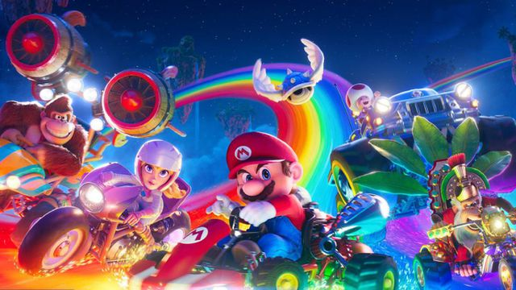

Claro! Os jogos do Super Mario são clássicos atemporais que fizeram parte da infância e continuam encantando gerações. Criado pela Nintendo, o Super Mario apresenta uma jogabilidade divertida, personagens carismáticos e níveis cheios de desafios. A missão do Mario é resgatar a Princesa Peach das garras do vilão Bowser, passando por mundos coloridos, enfrentando inimigos e coletando moedas.
A diversidade de cenários, desde os clássicos castelos até florestas e desertos, aliada à trilha sonora marcante, torna a experiência de jogar Super Mario única e memorável. Além disso, a introdução de novos power-ups e mecânicas inovadoras ao longo dos anos mantém a franquia sempre atualizada e cativante para os fãs.
E você? Tem alguma lembrança especial dos jogos do Super Mario?
Além de ser um dos ícones mais reconhecíveis da cultura pop, Super Mario é conhecido por sua jogabilidade envolvente e diversificada. Os jogos da série apresentam uma variedade de mecânicas, desde plataforma clássica até corridas, jogos de festa e até mesmo títulos de RPG. A franquia também introduziu personagens memoráveis como Luigi, Princesa Peach, Toad e Bowser, cada um com suas próprias características distintas.
Outro aspecto notável é a constante inovação. Ao longo das décadas, os jogos do Super Mario têm se adaptado às mudanças tecnológicas, incorporando novos elementos de jogabilidade e gráficos impressionantes. Além disso, os jogos do Mario frequentemente recebem elogios pela sua criatividade em design de níveis e pela capacidade de proporcionar diversão para jogadores de todas as idades.
E você, qual é o seu jogo favorito do Super Mario?

Claro! "League of Legends" (LoL) é um popular jogo online de estratégia em tempo real, no estilo MOBA (Multiplayer Online Battle Arena). Os jogadores assumem o controle de "campeões" com habilidades únicas e trabalham em equipe para destruir a base inimiga. O jogo oferece uma grande variedade de personagens, cada um com seu próprio estilo de jogo, e os jogadores podem se especializar em diferentes funções, como ataque, defesa e suporte.
Além disso, o LoL é conhecido por seu cenário competitivo robusto, com torneios profissionais e uma grande comunidade de fãs. Os desenvolvedores também estão sempre atualizando o jogo com novos campeões, atualizações de balanceamento e eventos especiais, mantendo a experiência fresca e empolgante para os jogadores.

Claro! Além da jogabilidade emocionante, o Fortnite é conhecido por suas constantes atualizações e eventos especiais que mantêm os jogadores engajados. Os desenvolvedores costumam introduzir novos itens, modos de jogo e colaborações com outras franquias, trazendo personagens e elementos populares para o universo do jogo. A comunidade também é muito ativa, com streamers, criadores de conteúdo e torneios competitivos que mantêm o jogo sempre em evidência. É um jogo dinâmico e divertido para quem gosta de desafios e interação social.

Claro! Roblox é uma plataforma de jogos e criação de mundos virtuais que permite aos usuários criar e jogar uma grande variedade de jogos criados pela comunidade. Os jogos no Roblox abrangem uma ampla gama de gêneros, desde aventuras e simulações até jogos de tiro e competições. O diferencial do Roblox é que os jogadores podem não apenas jogar, mas também criar seus próprios jogos usando as ferramentas disponíveis na plataforma.
Além disso, o Roblox tem uma comunidade muito ativa, com muitos desenvolvedores independentes criando conteúdo original para os outros usuários desfrutarem. A plataforma também oferece a oportunidade para os criadores ganharem dinheiro com suas criações, incentivando ainda mais a inovação e a diversidade de experiências dentro do jogo. É uma ótima opção para quem gosta de explorar diferentes tipos de jogos e tem interesse em criar seu próprio conteúdo.